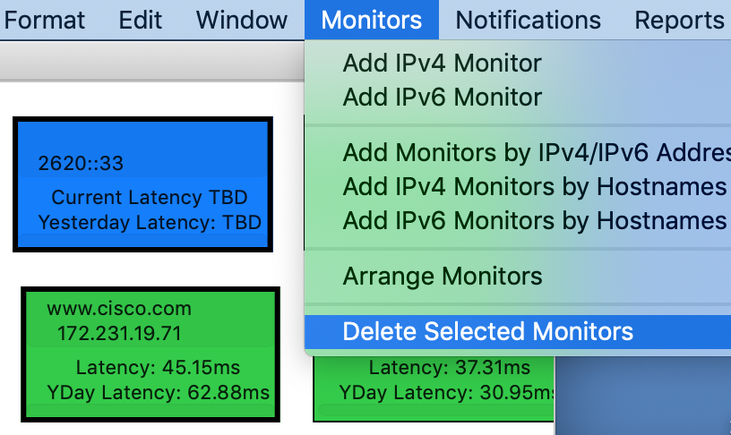

Delete selected monitors
You can select one monitor in a map by clicking on the monitor. A black edge will appear around the monitor. Using shift-click you can select multiple monitors.
Then select Monitors -> Delete Selected Monitors to delete those monitors. This deletes all historic availability and latency data for those monitors. This cannot be undone.

https://networkmom.net feedback@networkmom.net Copyright 2019 Network Mom LLC